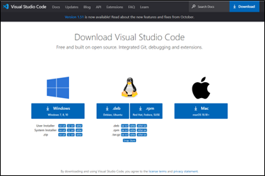
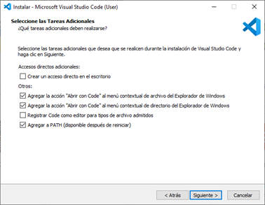
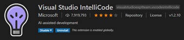
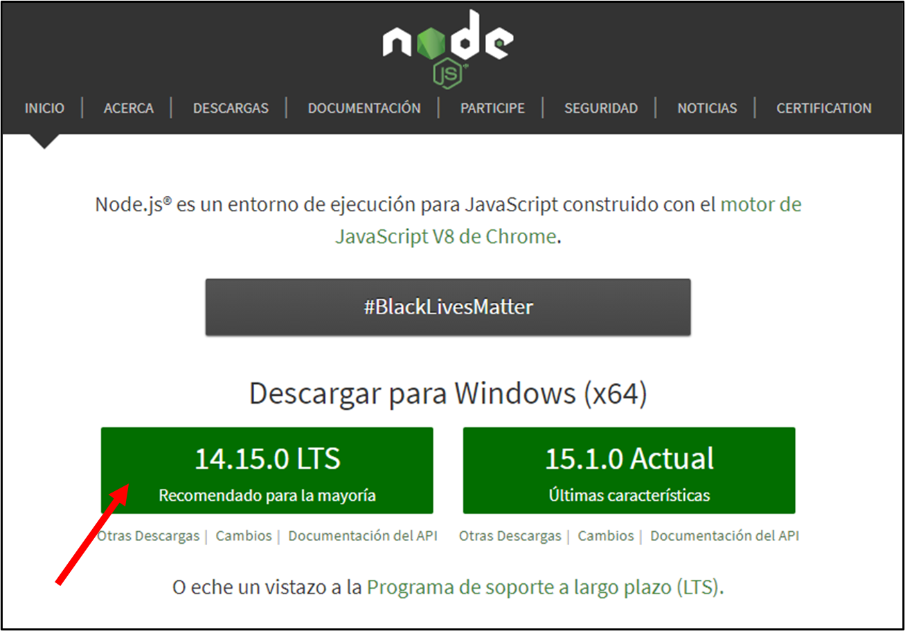
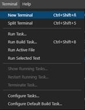
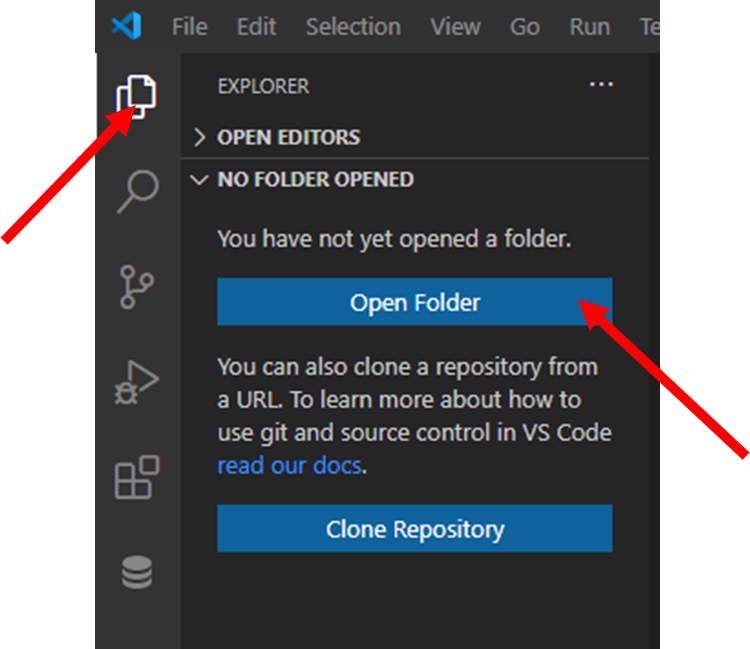
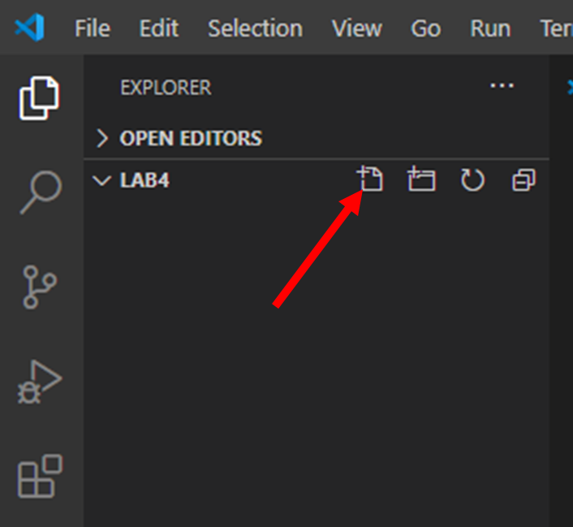

Laboratorio 4
Desarrollo de una aplicación Web (Servidor)
Objetivo:
-
Conocer el entorno de desarrollo Visual Studio Code para programar y diseñar una aplicación web.
-
Reconocer el funcionamiento y componentes de un sistema web a través de la implementación con
programación en JavaScript.
-
Generar un servidor web mediante el framework EXPRESS.
Duración:
Ciento veinte (120) minutos.
Materiales y Herramientas:
Investigación
Pregunta 1: ¿Qué es y para qué sirve JavaScript?
Pregunta 2: ¿Qué es un Framework?
Pregunta 3: ¿Qué es un IDE de programación? y ¿En qué se diferencia de un editor de texto?
Procedimiento
Paso 1: Instalación de Visual Studio Code
-
Instalar Visual Studio Code https://code.visualstudio.com/download

-
Marcar las casillas “Abrir con Code”

-
Una vez instalado VS Code, ejecutar el software e instalar las extensiones “Visual Studio IntelliCode” y
“vscode-icons”.

Pregunta 4: Investigue 3 extensiones de VS Code para el desarrollo de aplicaciones web
Paso 2: Instalación de Node.js
-
Instalar la versión recomendada de Node.js https://nodejs.org/es/

-
Abrir un terminal en VS Code y ejecutar los siguientes comandos

Paso 3: Programación en JavaScript
-
Crear un carpeta con el nombre “lab4” y abrirla en VS Code desde el explorador.

-
Crear el archivo demo.js

-
Editar el archivo con el siguiente contenido y guardarlo.
console.log("Mi primer código hecho por SUNOMBRE")
-
Ejecute el archivo desde el terminal de VS Code.
-
Eliminar la línea anterior y editar el archivo para que contenga el siguiente código:
function imprimir(nombre){
console.log("Mi primer código en JS por ",nombre);
}
exports.imprimir = imprimir;
-
Crear un nuevo archivo con el nombre app.js con el siguiente código
const demo = require('./demo.js')
demo.imprimir("SUNOMBRE")
-
Ejecute el archivo app.js desde el terminal de VS Code.
-
En el archivo demo.js agregar la siguiente función
function imprimirSalto(nombre){
console.log("Mi primer código en JS por %s\r\n",nombre);
}
-
Eliminar el comando exports, luego al inicio del archivo declarar una variable constante de tipo objeto
-
Al final del archivo asignar las funciones al objeto Demo y finalmente exportarlo
Demo.print = imprimir
Demo.println = imprimirSalto
module.exports = Demo
Pregunta 5: Investigue la diferencia entre VAR, LET y CONST a nivel de alcance, redeclaración y
reasignación.
-
Editar el archivo app.js para llamar a los funciones del archivo demo.js y ejecutarlo
-
Crear un nuevo archivo con el nombre de file.js con el siguiente código
fs.writeFile('archivo.txt','Archivo Vacío',function(err){
if (err) {
console.log(err)
} else {
console.log('Archivo creado')
}
})
console.log('Última línea')
Pregunta 6: Al ejecutar el archivo file.js ¿En qué orden se muestran los mensajes de consola? Explique
dicho comportamiento.
Paso 4: Creación de un servidor web
-
Crear un nuevo archivo con el nombre index.js
const http = require("http");
const handler = function(req,res){
res.write("<h1>Hola mundo</h1>");
res.end();
}
const server = http.createServer(handler);
server.listen(8080,function(){
console.log("Iniciar Página web con http://localhost:8080");
});
Cada que se realiza un cambio en el servidor web, se debe detener el proceso con CTRL+C (en
el terminal) y volver a ejecutar el código.
-
Ejecutar el archivo desde consola y abrir un navegador web con la dirección localhost:8080
Paso 5: Instalación de módulos externos
-
Ejecutar en el terminal npm init --y para crear el archivo package.json
Pregunta 7: ¿Cuál es el la función principal del archivo package.json?
-
Instalar el módulo colors con el comando npm install colors
-
Edite el archivo del paso 4 importando el módulo colors de la misma manera en que se importó el módulo
http
-
Edite la función callback de la función listen del paso 4 con la siguiente línea
console.log("Iniciar Página web con http://localhost:8080".cyan);
Paso 6: Creación de un servidor web con Express
-
Instalar el módulo express con el gestor de paquetes npm
-
Modificar el archivo index.js con el siguiente código
const colors = require('colors');
const express = require('express');
const server = express();
server.get('/',function (req,res) {
res.send("<h1>Hola mundo con Express</h1>");
});
server.listen(8080,function(){
console.log("Iniciar Página web con http://localhost:8080".cyan);
});
Para evitar estar deteniendo el código del servidor cada que se realiza un cambio, se puede
instalar el módulo nodemon, el cual se encarga de reiniciar el servidor con los nuevos
cambios.
Para ejecutar el servidor web con nodemon en lugar de ejecutar node index.js, se debe ejecutar
la instrucción npx nodemon index.js